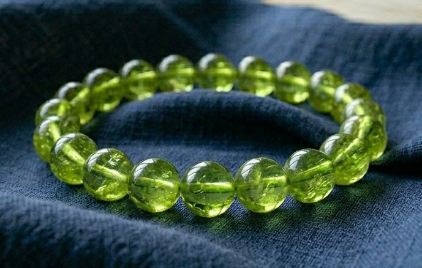

まゆ様
詳細のご希望、ありがとうございます。
まゆ様のために選んだ石について、
詳しくお伝えしますね。
まゆ様の命の流れを視させていただき、
今のまゆ様に最も必要な石を
3つ選びました。
まゆ様は、肥沃な大地のように、
種を蒔けば芽が出て、
雨が降れば栄養を蓄える、
受け止めて育てる深い力を持つ方です。
旦那様の小さな機嫌の揺れや、
家の中の空気の変化を、
他の人が気づかないほど
細部まで察知できる方。
でも──
「私が楽しんでいる場合ではない」
「先に旦那様を整えなくては」と、
自分の楽しみを後回しにする感覚が
繰り返されやすい流れがあります。
2026年11月に向けて、
ご夫婦の真ん中に吒枳尼天の力が
最も強く流れ込む流れが
すでに動き始めています。
その流れを最大限に活かすために、
まゆ様のエネルギーと
吒枳尼天（だきにてん）が
深く共鳴する3つの石を選びました。

太陽のようなやわらかい黄金色の石です。
まゆ様の「肥沃な大地」のエネルギーと
最も深く共鳴します。
稲穂と同じ温かい黄金が、
まゆ様の大地に豊かさを呼び込み、
育てる力をさらに引き出してくれます。
まゆ様の
「受け止めるばかりで疲れてしまう」
感覚を、
この石がそっと緩めてくれます。

吒枳尼天と最も共鳴が強い石です。
夕焼けのような温かいオレンジの光で、
細くなった火を
そっと灯し直す力があります。
まゆ様の命の流れには、
「楽しむ火を灯し直して、
ご夫婦の真ん中に
温かい場をつくる」という運びが
刻まれています。
カーネリアンは、その守護を日常の中で
ずっとそばに置いておける石です。
胸の奥の温度が戻り、
ご自分の楽しみを
我慢しなくなっていきます。

ご夫婦の真ん中に
「新しい芽」を育てる石です。
まゆ様が「自分の火が消えそう」
「分かち合えない」と
内側でぶつかりを感じるとき、
この石が、
そのループを静かにほどいてくれます。
受け身になりがちな流れを
止めるのではなく、
それを
「ふたりで育てる方向」
へと整えてくれる石です。
シトリン・カーネリアン・ペリドット。
この3つをまゆ様専用に組み合わせて、
一つひとつ手作りで仕上げます。
吒枳尼天への祈祷と
エネルギーチャージをして、
まゆ様のもとへお届けします。
身につけていくうちに、
「楽しんでいい」
「自分の火を灯していい」
という感覚が少しずつ戻ってきます。
日常の中で、守護がそばにある。
そして2026年11月に向けて──
旦那様の心の奥が
ふっとあなたへ向きを変える
その瞬間に、
エネルギーが整った状態で
臨めるようになります。
まゆ様の場合、
2026年6月から、
まゆ様の中の細くなっていた火が
温度を取り戻し始める流れがあります。
パワーストーンのエネルギーが
しっかりと馴染むまでには、
通常2〜3週間ほどかかります。
今から始めることで、
ちょうど2026年6月の
火が動き始める時期に
エネルギーが整った状態になります。
- ご注文から7〜10日以内に発送
- 追跡番号付きで安心
- 専用の浄化・エネルギーチャージ済みでお届けします
今回ご購入いただいた方には：
- パワーストーンの取扱い・浄化方法のご案内
- ご購入から3ヶ月間、気になることがあればいつでもご相談いただけます
ご希望の方は、
「ブレスレット希望」と
メッセージをお送りください。
ご不明な点があれば、
お気軽にお尋ねください。
まゆ様が笑うことが、
旦那様の中の
言葉にならない温度を引き出します。
どうか、ご自分の火を
ちゃんと灯してくださいね。